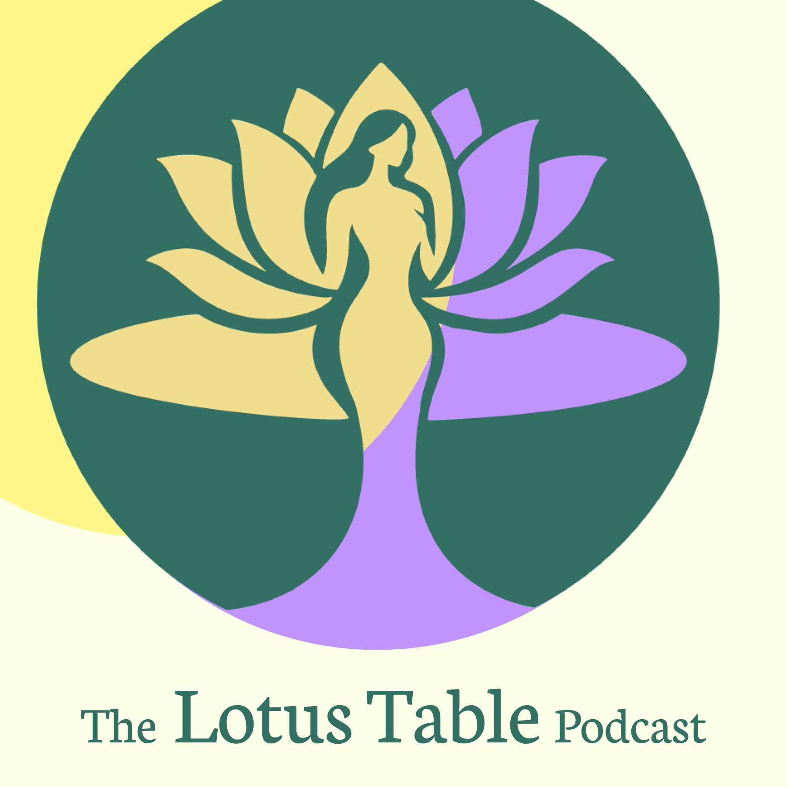

01
Why We are Doing This
From family expectation to workplace struggle. Why creating a space for Asian women to feel seen matters.
A podcast with Flora & Rachel
On the expectations we inherit, and the slow work of moving from surviving to thriving on our own terms.

About
Two Asian American women having the honest conversations we wish we had years ago, on what it is really like to navigate a world that was not built for us.
We talk about what we inherited, what it costs to keep the peace, and what happens when we stop. No advice from on high. Two people working it out loud, and an invitation for you to do the same.
You do not have to earn your place at the table. You are allowed to build one.
Episodes
Eight episodes
All available now
01
From family expectation to workplace struggle. Why creating a space for Asian women to feel seen matters.
02
The harmful stereotypes that shape how Asian women are perceived, and how they come to see themselves.
03
The words and actions Asian women endure, and how to respond with intention and a dash of humor.
04
The weight of familial expectation, and how cultural values can be weaponized against you.
05
How a family measures a daughter's worth, and how that measure can hold her back from knowing herself.
06
On letting go of the narratives that no longer serve us, and reclaiming the power to write our own.
07
On personal rebirth, and the role of support systems in building a life that matches your values.
08
On healing family wounds, forming your own closure, and setting boundaries to protect your hard-won peace.
Follow
Season Two is in the works. Follow the show and you will know when it lands.